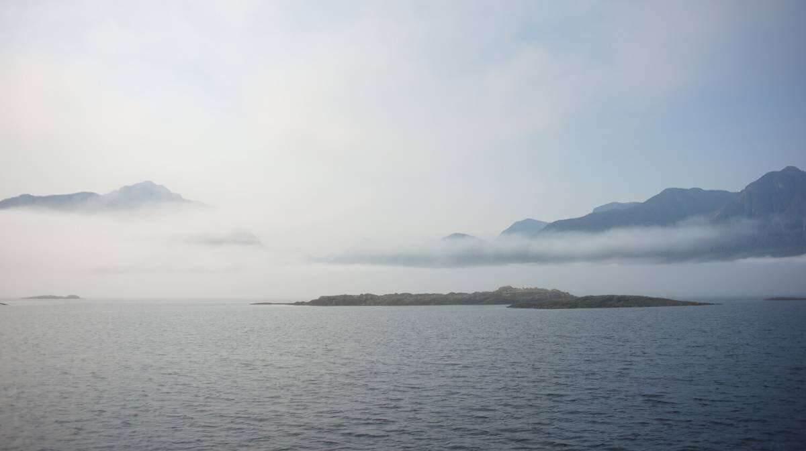

johnstone strait anchorages
In 2024 we traveled through Johnstone Strait to get to us se alaska, we gathered notes on several anchorages that we've stopped at on this page.
See also more detailed posts: Yuculta and Dent Rapids, Shoal Bay, Port Neville, Telegraph Cove, Sointula, Port McNeill.
To view all of stops, see Summer 2024 route
Bickley Bay(Cordero Channel)
We tucked in Bickley Bay after passing Green Point Rapids, with 30-35 knots out of the NW in the forecast. On arrival, we found an anchoring spot in 50 ft(HW), if it wasn't for the numerous crab pots occupying the area we would have anchored in shallower waters. We anchored on the west side of the bay, near the head. We had considered going to Shoal Bay, but we arrived at the anchorage at 1730, we assumed that at this time of the year(August 10th) that it would be full(Shoal Bay is a popular stop). Coming to Bickley Bay, the wind was calm near and when passing the rapids, but accelerated in Cordero Channel, and some of that wind came gusting into anchorage. The wind lessened to a "calm" 20-30 out of the NW after midnight, but the gusts were still very strong, they kept us up all night. We had read that this bay had poor holding(according to Waggoner), so we were a bit concerned, but we set our anchor well, with 4:1 scope(for the heavy winds that we were expecting) and we didn't budge(we had our anchor watch on). Other resources we had consulted mentioned Bickley Bay as having adequate holding, either way, that night, our anchor held fine. The wind swirled around the bay and sometimes appeared to be coming from the entrance, we got little wavelets, but nothing too dangerous. In short, Bickley Bay is not the best anchorage in high winds, but it may be fine in calmer weather, it is a purely utilitarian anchorage.
Forward Harbour
We anchored in Douglas Bay, at the west end of Forward Harbour, on our way north(May) to us se alaska and on our way back south(August). On our way north, we anchored in 30 ft of water, with good holding. The wind curled around the entrance, turning the anchorage into a lee shore, but there were no waves. On our way south, we arrived late, at around 1930, and found 7 boats taking up all of the shallower spots, we anchored in 70 ft at the back with the big yachts. The wind did not come from the entrance this time, it came over from Bessborough Bay. We were anchored in deep waters, but our anchor held, even if it was gusty (20-30 NW at night). On arriving and leaving, we saw boats anchored in the little bight bordering the entrance channel, it looked perfectly calm there, we may try to anchor there next time, especially at the height of summer when Douglas Bay is nearly always full. Funny enough, by 0800 the next morning all of the boats had left, all but us.
Boat Bay (Broughton Strait)
We had not planned on anchoring here(August 8th), we were aiming for Port Harvey, but our progress into Johnstone Strait from Sointula on Malcom Island was slow, too slow. The weather in Queen Charlotte Strait called for NW 15, diminishing to light overnight. The current was about to turn on us, so we headed for Boat Bay. We entered via a narrow pass north of the little island south of the bay, there were no kelp, but a fallen tree did extend some ways into the water. We anchored in 32 ft. There was some wind and wavelets, but nothing bad (might not be ideal in high W-NW winds or SE winds). The reefs bordering the bay offered some shelter. A cruiseship passed and it didn't disturb the waters too much-it may have been low tide at the time of its passing, the reefs offer more protection at low tide. We had a very quiet night here. The boat was enveloped in fog the next day, the wind rose to maybe 10-15 out of the NW, with little wavelets entering the anchorage, but again, it wasn't too bad, and we left for Forward Harbour shortly after anyway (around noon). In settled weather, this is a good stop, the holding was good. The shore has cabins and many tents, a small floating dock hosted a large inflatable speed boat, to take people back to the city, we imagined. We heard someone operating a chainsaw late in the evening, but otherwise it was very quiet.